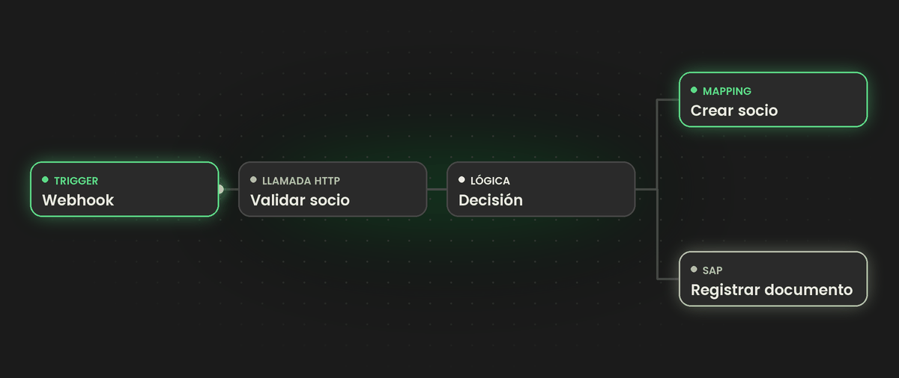
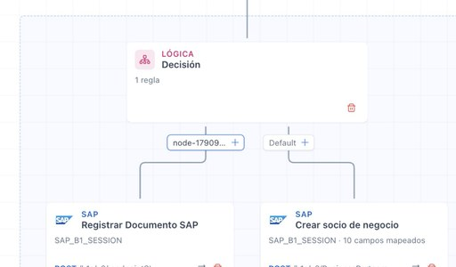
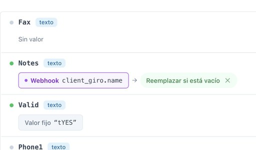
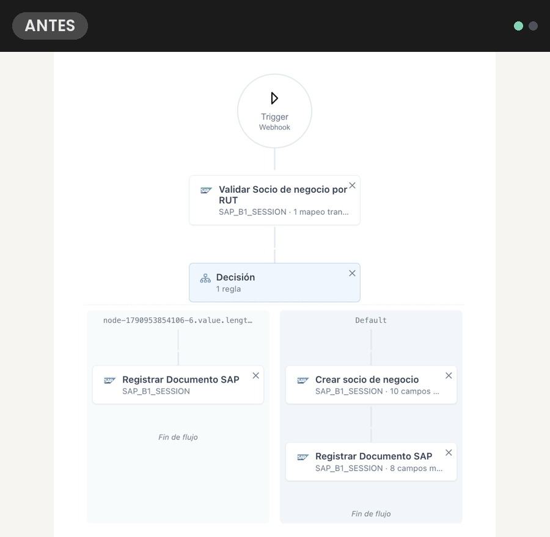
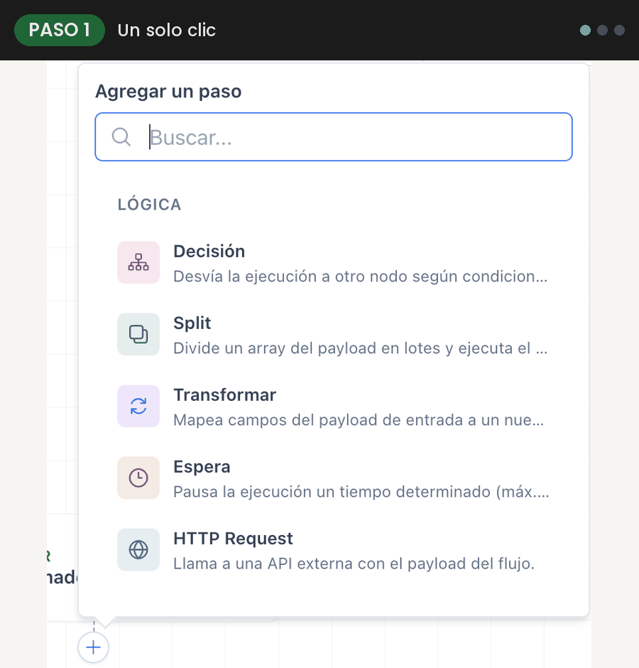
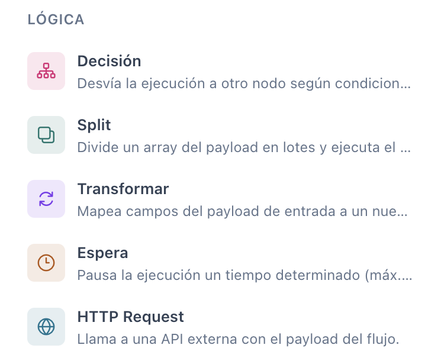
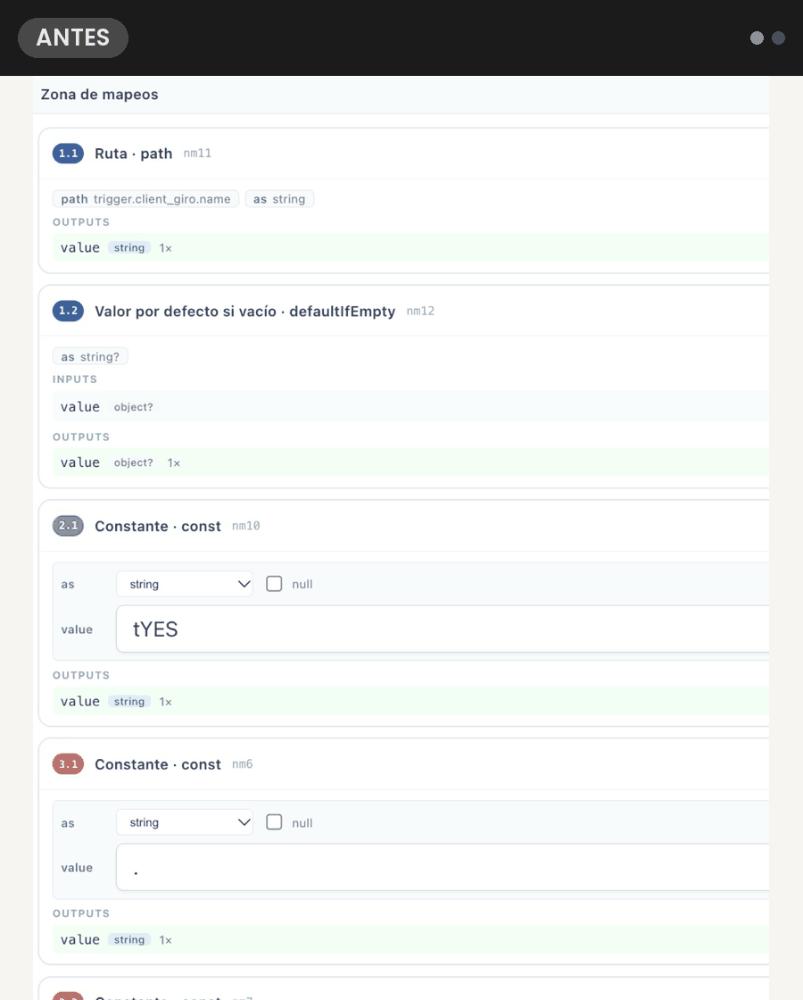
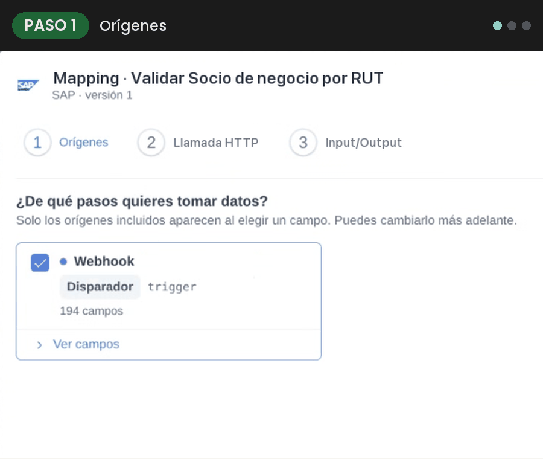

|
Sistema de Integraciones
Novedades · Octubre 2026 |
| |

|
Novedades de producto
¡Gran avance en Workflow y Mapping!
El equipo de Sistema de Integraciones tiene un anuncio importante.
|
| | | Hemos realizado cambios que nos van a ayudar a crear workflows de una manera más ágil, fácil y organizada. En esta edición
 |
|
01 —
Workflows
Más guiados y visuales →
| |
|
 |
|
02 —
Mapping
Adiós a los cables →
| |
| 01 — Workflows Crear un workflow ahora es más guiado y visual
 Qué ves: el mismo workflow, «integrar facturas de venta», en el editor anterior y en el nuevo lienzo, donde cada paso es una tarjeta con su sistema. Ver en grande ↗ |
|
Antes y ahora Un lienzo más claro
1 |
Empiezas con lo básico: completas los datos del flujo y eliges cómo arranca. |
2 |
Armas el recorrido en un lienzo: cada paso es una tarjeta con su color y te avisa si le faltan datos. |
3 |
Agregas pasos donde quieras: un botón «+» con buscador entre los pasos. |
|
Agregar pasos A tu manera
Un solo clic: ahora, desde un solo clic, podemos agregar pasos.
Agregar varios: un espacio para ver todos los nodos disponibles, seleccionar varios o filtrarlos.
Arrastrar y soltar: o, si prefieres, los arrastras desde el costado. |
|
 Qué ves: el menú «Agregar un paso» desde el «+», la ventana «Agregar al workflow» con varios nodos marcados y el catálogo lateral. Ver en grande ↗ |
| Acomodar en un clic |
| El botón «Acomodar» ordena el diagrama por ti. |
|
| Duplica y copia pasos |
| Llévalos a otra rama; el sistema te pide revisar de dónde toman los datos. |
|
| Guarda tu avance |
| Puedes guardar tu trabajo como borrador. |
|
|
 |
|
Nodos nuevos Más herramientas para armar tus flujos Sumamos un grupo completo de nodos de lógica para controlar el recorrido: tomar decisiones, dividir y transformar datos, hacer pausas o llamar a otros sistemas. Qué ves: el grupo «Lógica» del catálogo: Decisión, Split, Transformar, Espera y HTTP Request. |
|
| |
| 02 — Mapping Así funciona el nuevo Mapping
 Qué ves: el mapping de «Crear socio de negocio»: antes, cajas unidas por cables; ahora, una lista de campos con su origen y sus funciones. Ver en grande ↗ |
|
Antes y ahora Adiós a los cables
Ahora cada campo se completa eligiendo de dónde viene el dato y qué hacerle.
✓ |
Te avisa si el tipo de dato no corresponde. |
✓ |
Un panel muestra lo que falta corregir, con opción de deshacer. |
✓ |
Abre más rápido y conserva los mappings que ya tenías. |
|
|
Paso a paso Tres pasos, en orden
PASO 1 · ORÍGENES
Eliges de qué pasos quieres tomar los datos. |
PASO 2 · LLAMADA HTTP
Defines a dónde se llama y qué campos se envían, aplicando funciones a cada dato. |
PASO 3 · INPUT / OUTPUT
Ves la forma de los datos que entran y salen de este paso. |
|
|
 Qué ves: el paso a paso en «Validar Socio de negocio por RUT»: origen, URL armada con funciones y JSON de entrada y salida. Ver en grande ↗ |
|
|
|
Conectamos sistemas.
Impulsamos personas.
|
|
|
|
■ Dot Solutions · Comunicación interna. |
|
|